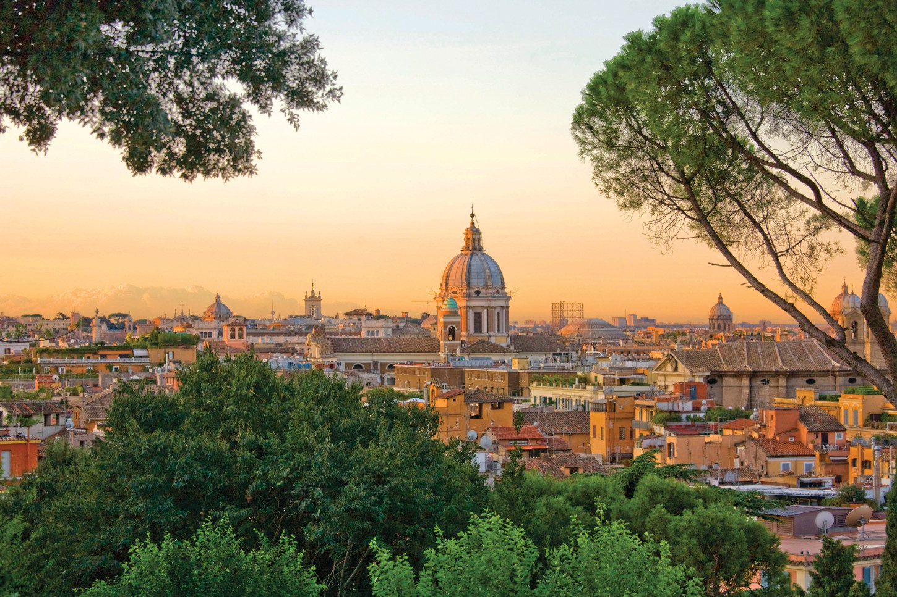
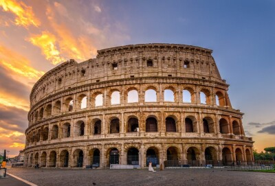
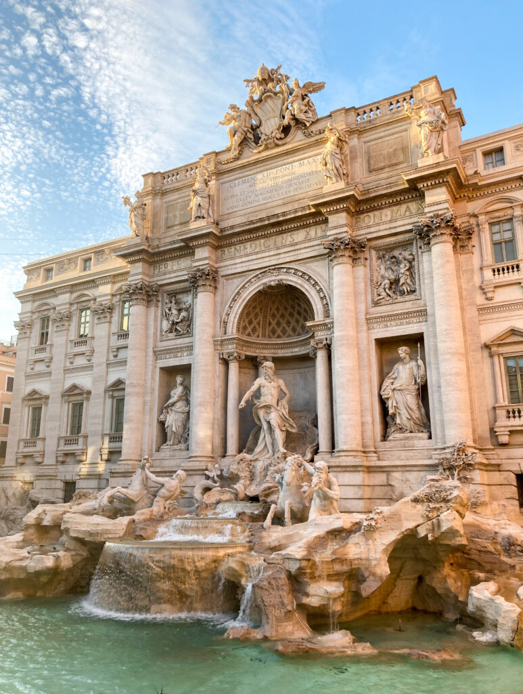
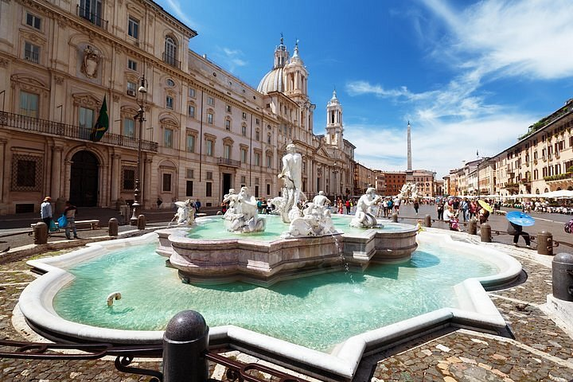
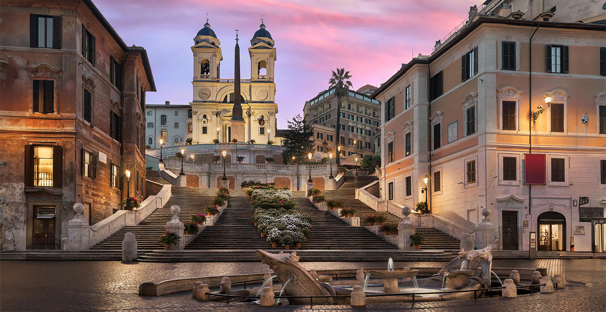

ROMA
Rzym Sulejówek Londyn

Rzym - stolica i największe miasto Włoch, położone w środkowej części kraju nad rzeką Tyber i Morzem Śródziemnym, zarazem stolica regionu administracyjno-historycznego Lacjum (Lazio).Centrum administracyjne (wł. comune speciale) ma powierzchnię 1287 km² i liczbę ludności 2 825 661, będąc trzecim co do wielkości miastem Unii Europejskiej. Miasto Stołeczne Rzym ma 4 331 856 mieszkańców.Rzym od starożytności znany jest jako Wieczne Miasto (łac. Roma Aeterna), a także „stolica świata” (łac. caput mundi – dosłownie „głowa świata”).Rzym jest metropolią o znaczeniu globalnym, a także dużym węzłem komunikacyjnym z jednym z największych międzynarodowych portów lotniczych w Europie, który obsługuje ponad 38 milionów pasażerów rocznie, rozbudowaną siecią autostrad i linii kolei dużych prędkości. Światowy ośrodek turystyczny z bardzo bogatymi zabytkami starożytności i średniowiecza (kościoły, bazyliki, Koloseum, pałace, akwedukty, fontanny i wiele innych budowli), niezwykle bogate muzea, nowoczesne osiedla mieszkaniowe na przedmieściach. W 1960 roku organizował Letnie Igrzyska Olimpijskie. W 2017 roku Rzym odwiedziło 9,5 mln turystów w ciągu roku. Znajdują się tu siedziby dwóch organizacji ONZ: organizacji do spraw Wyżywienia i Rolnictwa oraz Międzynarodowego Funduszu Rozwoju Rolnictwa.W granicach Rzymu, na prawym brzegu Tybru, leży miasto-państwo Watykan (łac. Status Civitatis Vaticanæ), będący enklawą na terytorium państwowym Włoch.
koloseum

Koloseum (Amfiteatr Flawiuszów) to starożytny, eliptyczny amfiteatr w Rzymie, wzniesiony w latach 70–82 n.e. przez cesarzy Wespazjana i Tytusa. Ten monumentalny zabytek z trawertynu, wysoki na blisko 50 metrów, mieścił 50–75 tysięcy widzów, oferując walki gladiatorów i pokazy dzikich zwierząt. Symbol potęgi Rzymu, obecnie jest ikoną miasta i największym zachowanym amfiteatrem na świecie.
panteon
Mapa na stronie www.
Filmik na stronie www.

Panteon w Rzymie to jedna z najlepiej zachowanych starożytnych świątyń, wzniesiona ok. 125 r. n.e. przez cesarza Hadriana jako miejsce kultu wszystkich bogów. Słynie z potężnej, żelbetowej kopuły (największej niezbrojonej na świecie) z okiem (oculusem) w szczycie. Od VII w. funkcjonuje jako kościół pw. Najświętszej Marii Panny od Męczenników, będąc jednocześnie mauzoleum wybitnych postaci.
fontanna di trevi

Fontanna di Trevi to największa i najsłynniejsza barokowa fontanna w Rzymie, zaprojektowana przez Nicolę Salviego w XVIII wieku. Ten monumentalny zabytek z trawertynu przedstawia Neptuna na rydwanie, a wrzucenie monety przez ramię ma zapewnić powrót do Wiecznego Miasta. Fontanna jest ikoną kultury, rozsławioną m.in. przez film La Dolce Vita.
piazza navona

Piazza Navona to jeden z najpiękniejszych i najbardziej tętniących życiem barokowych placów w centrum Rzymu. Powstał w miejscu antycznego Stadionu Domicjana, zachowując jego charakterystyczny, owalny kształt. Słynie z trzech wspaniałych fontann (w tym centralnej Fontanny Czterech Rzek Berniniego), malarzy oraz restauracji, stanowiąc serce rzymskiego życia towarzyskiego.
piazza di spagna

Piazza di Spagna to jeden z najsłynniejszych, barokowych placów w Rzymie, łączący elegancję z kulturą u stóp Schodów Hiszpańskich. Jego wizytówkami są XVIII-wieczne, 135-stopniowe schody prowadzące do kościoła Trinità dei Monti oraz fontanna Barcaccia w kształcie łodzi. To tętniące życiem miejsce spotkań, otoczone butikami i luksusowymi hotelami.